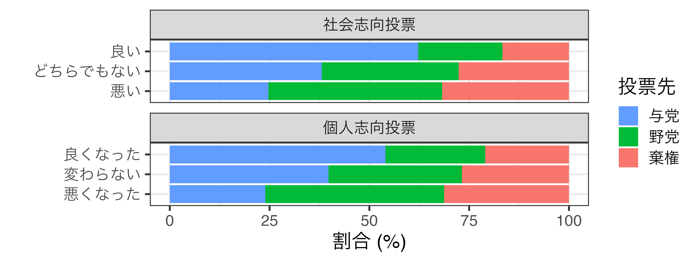
政治文化論
選挙と経済＆選挙と政策
宋 財泫
関西大学総合情報学部
2024-08-29
経済状態と与党への投票
政治における入力と出力
政治における入力と出力のサイクル
- 入力\(\rightarrow\)出力\(\rightarrow\)入力\(\rightarrow\)出力\(\rightarrow\)…
- 出力\(\rightarrow\)入力：良い経済状況を実現した応答性の高い政府への投票
- 入力\(\rightarrow\)出力：再選のためにより良い経済状況を実現しようとする
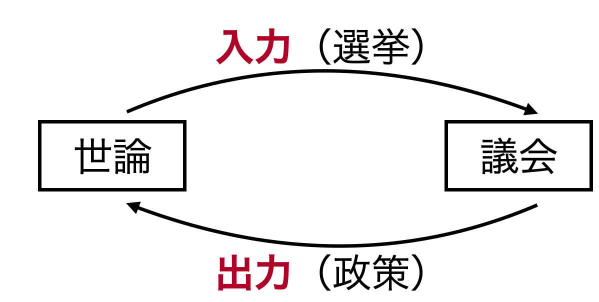
経済と与党への投票
- 応答性の維持には有権者の正しい選択が不可欠
- 世論と出力が一致\(=\)高い応答性
- 応答性が高い政府には「再選」という報酬を与える
- 有権者の要望（世論）は多岐に渡る
- 一般的に「経済」が重要（前々回）
過去の経済投票
- 衆院選における経済投票
- 1983年〜2021年
- 経済状況：実質国内総生産（GDP）成長率
- 国民経済計算（内閣府）から入手
- 選挙が行われた年の成長率
- 与党の得票率
- 連立内閣の場合、第一与党
- 経済状況：実質国内総生産（GDP）成長率
- \(\Rightarrow\) 経済状況と与党得票率の関係
日本の衆院選

アメリカの場合
- 大統領選挙における経済投票
- 1920年〜2012年
- 経済状況：実質国内総生産（GDP）成長率
- Ray C. Fairのデータ
- 選挙が行われた年の成長率
- 経済状況：実質国内総生産（GDP）成長率
- 与党候補者の得票率
- 経済状況と与党候補者得票率の関係
アメリカ大統領選挙
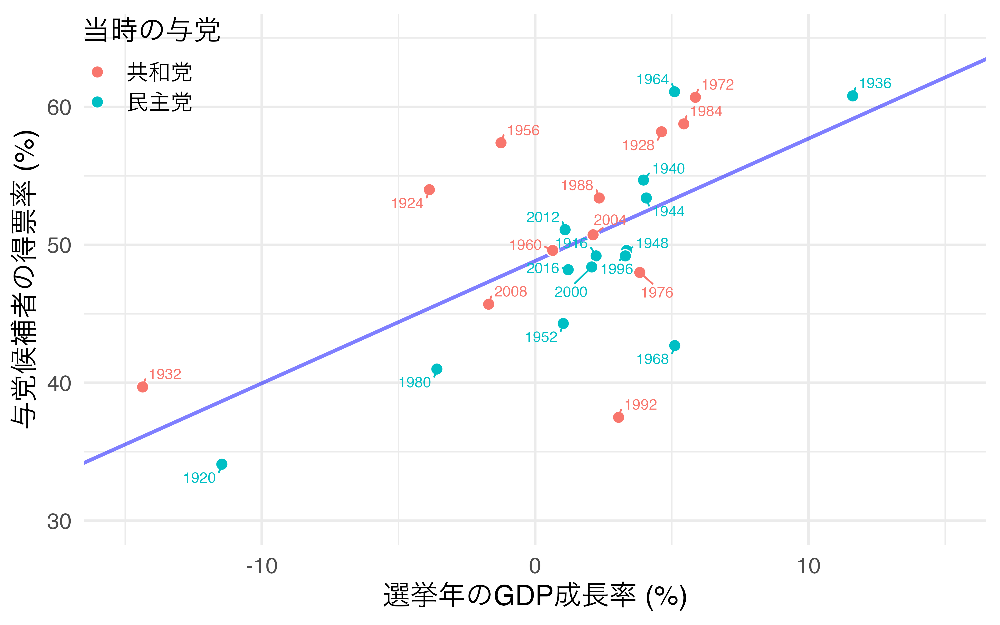
日米における経済投票
- 両国において経済投票が確認可能
- 経済投票の強さ：アメリカ\(>\)日本
- 執政制度の違い
- 大統領制（アメリカ）：責任の所在が大統領個人に帰属すると判断
- 議院内閣制（日本）：責任の所在が内閣・与党；連立内閣の可能性
- 責任の所在（accountability）が明確であるほど経済投票が行われやすく、その程度も強い（Anderson 2000）。
- 一般的に議院内閣制の方が責任の所在が不明確な傾向
- 例）新型コロナ定額給付金
- 執政制度の違い
与党の景気対策と選挙のタイミング
景気対策の誘引
- 有権者が経済状況から投票先を選択
- 選挙の際、良い経済状況である必要
- 選挙のタイミングが決まっている場合
- アメリカの選挙、日本の参院選：定まった任期
- 選挙のタイミングに合わせて景気対策
- 選挙のタイミングが決まっていない場合
- 日本の衆院選：解散が可能
- 経済状況が良いタイミングで解散→選挙
- または、景気対策+解散\(\rightarrow\)選挙
日本の例
- 2009年3月の定額給付金
- 1人当たり12000円 or 20000円（総額２兆円）
- 2009年7月衆議院解散 \(\rightarrow\) 8月総選挙
- \(\rightarrow\) 民主党政権の誕生
- 「借金を増やすだけで景気対策にはならない。選挙目当てのその場しのぎの対策だ」、「焼け石に水。もらったときはいいけど翌月は何も変わらない。抜本的な対策をしてほしい」、「もらえればそのときは助かるが、経済全体に対する効果が本当にあるとは思えない」など
- 消費増加8%、経済成長率の0.13%\(\uparrow\)の効果
景気対策の問題点
- 選挙のための景気対策
- 任期中ほとんど実績がなくても直前の景気対策で集票か可能
- 有権者の正しい選択を妨げる可能性
- ただし、選挙直前の良い景気が景気対策でなく、これまでの実績の結果である可能性も存在
- 逆に有能な政府を落選させる可能性→与党へ投票する可能性
- 与党はこのような有権者を騙す誘引を持つ（Rogoff and Sibert 1988）
- 政府と有権者間に存在する情報の非対称性（後述）が原因
政治的景気循環
政治的景気循環
- 政府-有権者間の情報の非対称性 \(\rightarrow\) 短期的な景気対策
- 大規模な財政支出
- 例）給付金、減税、公共事業
- 副作用として物価上昇
- 失業率と物価のトレードオフ関係
- 一方、有権者は低失業率＆低物価を好む
- 大規模な財政支出
- 選挙の周期に合わせた経済成長率・失業率・物価の変化
- \(\rightarrow\) 政治的景気循環（Political Business Cycle）（Nordhaus 1975）
Hibbs (1977)から
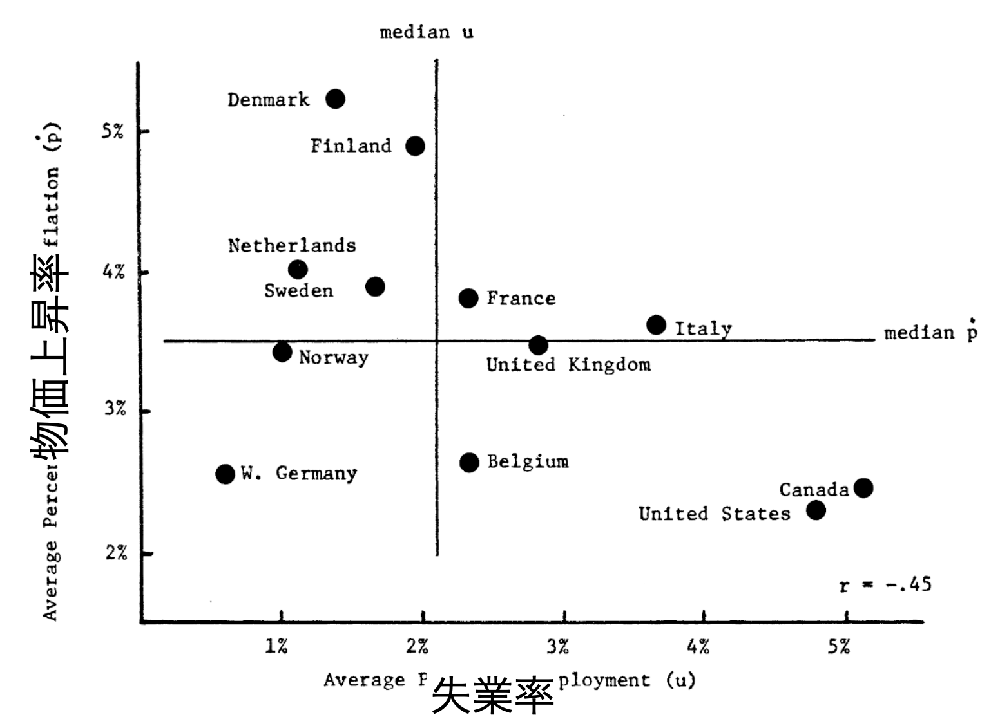
アメリカの例
- 大統領選挙から4年後
- アメリカの大統領任期は4年
- GDP・物価上昇率が増加
- 失業率が低下
- ただし、傾向としては弱い
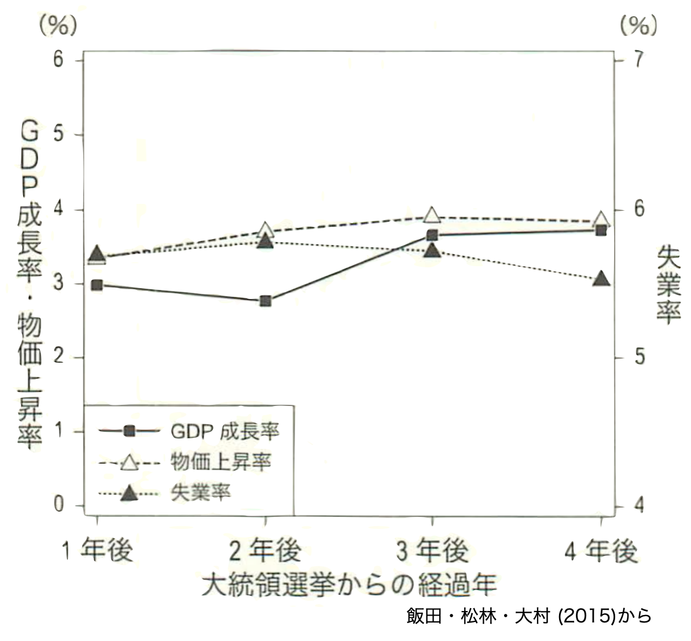
与党の党派性への注目
- 選挙のタイミングと経済状況の関係は弱い
- 与党の党派性に注目する必要（Alesina and Rosenthal 1995）
- 民主党：リベラル
- 政府の財政支出を通じて低所得者・一般労働者の利益を重視
- \(\Rightarrow\)失業率の改善を重視
- 共和党：保守（古典的自由主義）
- 法人税減税、規制緩和を通じて大企業、投資家の利益を重視
- \(\Rightarrow\)物価上昇の抑制を重視
党派性と景気対策
- 社会主義・労働系政党が与党である時期が長い国は物価上昇率が高く、失業率が低い（Hibbs 1977）
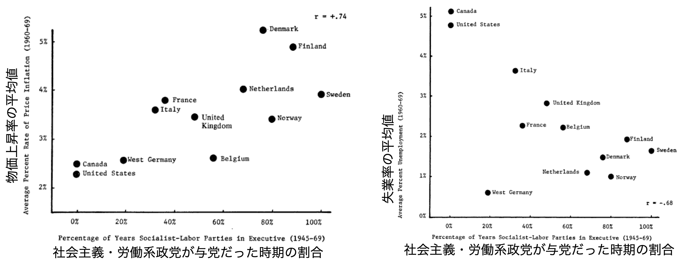
民主党政権の場合
選挙から4年後（次の選挙）の年
- 失業率\(\downarrow\)
- 物価上昇率\(\uparrow\)
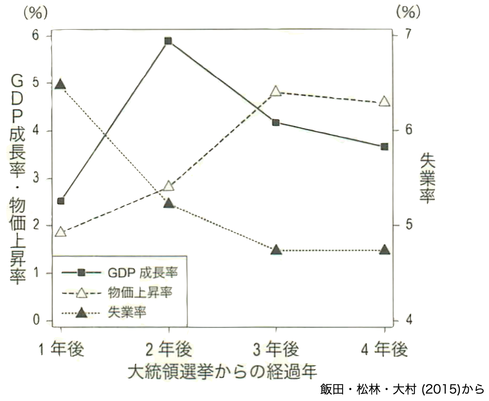
共和党政権の場合
選挙から4年後（次の選挙）の年
- 失業率\(\uparrow\)
- 物価上昇率\(\downarrow\)
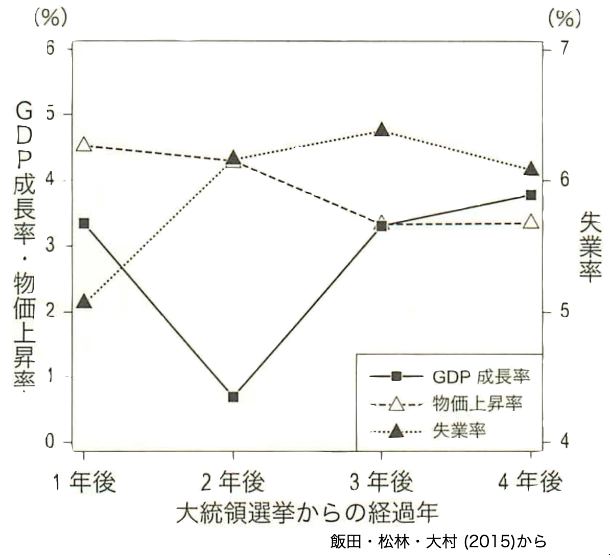
政治家と有権者の情報の非対称性
情報の非対称性
- 政府の実績から投票先を考える有権者
- 一般有権者が持つ情報の範囲は狭い（時間的、空間的）
- 一方、政府はより広範囲の情報を持つ
- 短期的な景気対策で選挙に備えることが可能
- 有権者と政府が持つ情報量は同じでない\(\rightarrow\)情報の非対称性
- 応答性の維持が困難
- 経済分野に限定されない
- 政治家のスキャンダルを我々は全て知っているか
最善策：賢い有権者
- 情報の非対称性を克服する最善策
- 有権者が賢くなること
- 常に政治に関心を持つ
- 政策・経済・争点に関する知識を自ら収集し、理解する
- 政府が何をしているか、してきたかを理解する
- 責任は誰にあるかを理解するなど
- 「政府は選挙前にバラマキをする動機を持つ」ことを知るだけでも\(\bigcirc\)
- 政治学教育の目的：良き市民の育成
- 有権者が賢くなること
- ただし、現実的な解決策ではない
非対称性の解消へ
- 情報公開制度の整備
- マスメディアの自由な活動
- 市民団体
- 野党
情報公開制度
- 様々な公式統計資料がインターネット上に公開
- 資料から政府与党の実績をより正確に判断可能
- 例）経済成長率が高いと言われているが、他の国に比べたらどうだろうか；前の政権に比べたらどうだろうかなど
- 統計資料以外にも多くの資料が公開
- 情報公開請求（高槻市の例）
- 誰でも可能（高槻市と無関係でも「公開申出」が可能）
- 市の職員が職務上作成・取得した文書、図画、写真、フィルム、スライド及び電磁的記録であって、市において組織的に用いるものとして管理しているものが対象
- ただし、個人情報が含まれている場合は\(\times\)
マスメディアの自由な活動
- 政府から提供された情報だけでなく、独自の情報収集
- マスコミ、ジャーナリストは有権者よりも専門性を持つ情報収集のプロ
- 言論の自由
- 言論の自由は保証されている場合、政府の都合に悪い情報も含めて報道が可能
例）田中金脈問題（1974年）
- ジャーナリストの活動によって明らかになった政治スキャンダル
言論の自由（2024年）
2024 World Press Freedom Index（https://rsf.org/en)
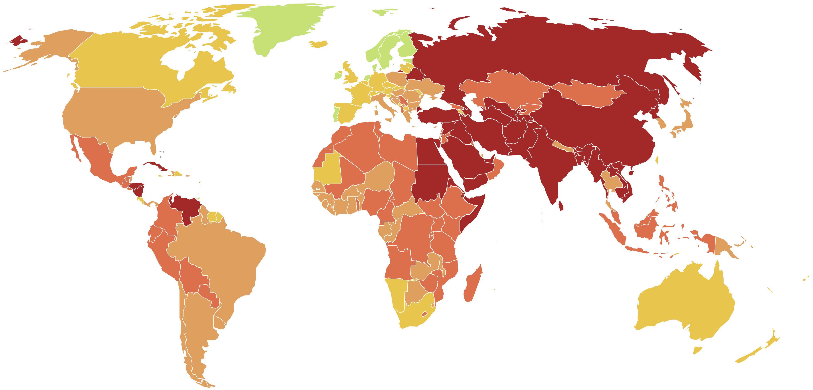
言論の自由（上位・下位10カ国）
2024 World Press Freedom Index（https://rsf.org/en)
| Rank | Country | Score | Diff |
|---|---|---|---|
| 1 | Norway | 91.89 | =0 |
| 2 | Denmark | 89.60 | ▲1 |
| 3 | Sweden | 88.32 | ▲1 |
| 4 | Netherlands | 87.73 | ▲2 |
| 5 | Finland | 86.55 | =0 |
| 6 | Estonia | 86.44 | ▲2 |
| 7 | Portugal | 85.90 | ▲2 |
| 8 | Ireland | 85.59 | ▼-6 |
| 9 | Switzerland | 84.01 | ▲3 |
| 10 | Germany | 83.84 | ▲11 |
| Rank | Country | Score | Diff |
|---|---|---|---|
| 171 | Myanmar | 91.89 | ▲2 |
| 172 | China | 89.60 | ▲7 |
| 173 | Bahrain | 88.32 | ▼-2 |
| 174 | Vietnam | 87.73 | ▲4 |
| 175 | Turkmenistan | 86.55 | ▲1 |
| 176 | Iran | 86.44 | ▲1 |
| 177 | North Korea | 85.90 | ▲3 |
| 178 | Afghanistan | 85.59 | ▼-26 |
| 179 | Syria | 84.01 | ▼-4 |
| 180 | Erteria | 83.84 | ▼-6 |
言論の自由（東アジア）
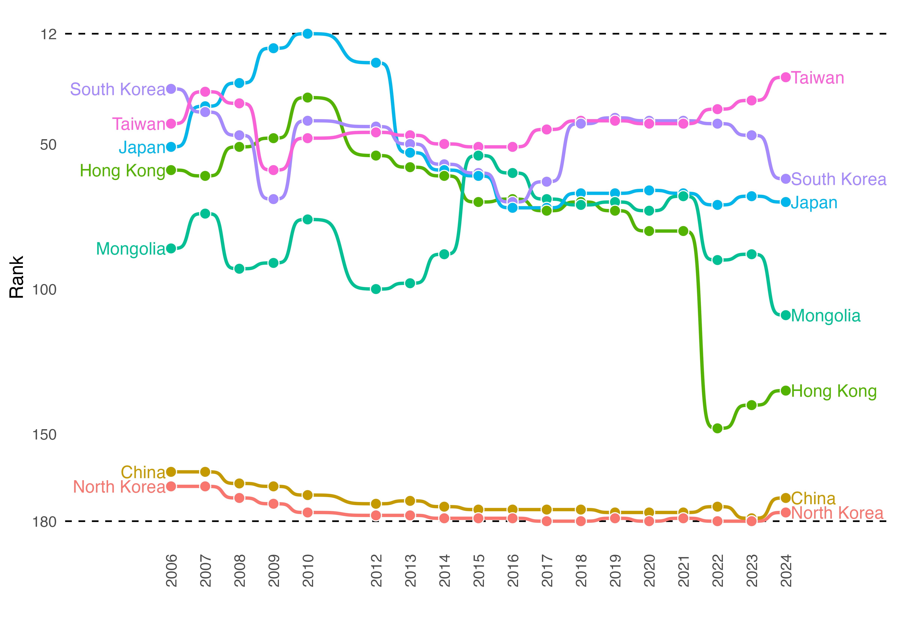
市民団体
- 市民オンブズマン団体：政府の活動を監視する市民団体
- 政府が公開した資料、情報公開請求から得られた情報を市民に伝える
- インターネットなど
- 政府の資料をわかりやすくまとめて提供
- 国・自治体における税金の支出の実態など
- アメリカの場合、各法案に対してどの議員が賛成し、反対したかも
活動の例
- 全国市民オンブズマン連絡会議が調べた「全国情報公開制度ランキング」（2012年資料の一部）
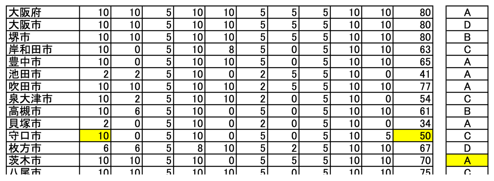
野党の役割
- 与党（政府）の不正を監視
- 野党が強いほど、与党はプレッシャーを感じる
- 政府への質問・質疑を通じた情報提供
- 政府の行政活動の実態、政府の見解を明らかに
- 質問主意書
- 野党議員の文書による質問
- 提出された場合、7日以内に答弁が義務付け（国会法第74条）
- 有権者よりも確実・迅速に情報提供
- 議会のホームページから閲覧可能
世論と政治家
経済以外の争点
- 前半：選挙・世論と経済の関係
- 有権者にとって経済は最重要課題であるが、すべてではない。
- 経済は「高いGDP成長」、「低失業率」、「物価上昇率の抑制」といった明確な目標があり、誰もが同意する目標
- 経済以外の争点は？
- 対立する争点の存在（対立争点; position issue）
- 対概念として価値争点（valence issue）
- すべての有権者を満足させることは不可能
- 政党・政治家はどのような政策を掲げ、実現しようとするか
- 対立する争点の存在（対立争点; position issue）
有権者の投票選択
- 政策に基づいた投票行動 \(\rightarrow\) 争点投票
- 近接性モデル（Downs 1957）
- 政治家は再選、得票の最大化のために自分の位置を調整
- 世論の分布と中位投票者定理が重要
中位投票者（median voter）とは
政策空間内の有権者の分布において中央に位置する人
- 51番目の人の位置は-2 （有権者が100人の場合、49番目と50番目の平均値）
- -2の有権者が中位投票者
| 位置 | 人数 | 累積 |
|---|---|---|
| -5 | 10 | 10 |
| -4 | 15 | 25 |
| -3 | 20 | 45 |
| -2 | 15 | 60 |
| -1 | 10 | 70 |
| 0 | 8 | 78 |
| 1 | 7 | 85 |
| 2 | 6 | 91 |
| 3 | 5 | 96 |
| 4 | 3 | 99 |
| 5 | 2 | 101 |
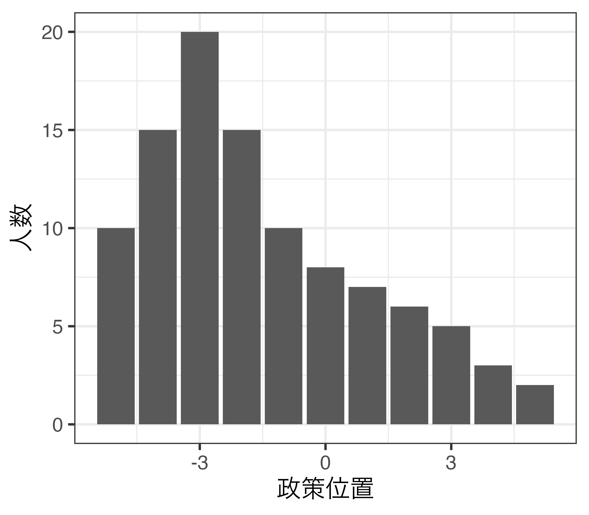
政治家の政策位置
- 有権者が近接性モデルに従い、投票選択をすると仮定
- 二人の候補者がいる場合、中位投票者の位置にすることで当選可能
- 候補者A（-2）：56票獲得
- 候補者B（-3）：45票獲得
- 中位投票者と同じ位置の候補者が常に勝利
- 例外）二人の候補者が中位投票者の位置へ移動
- \(\Rightarrow\) 政策位置が中位投票者の位置へ収斂
- \(\Rightarrow\) 中位投票者定理（median voter theorem）
中位投票者定理は成り立つか
- 東京大学・朝日新聞共同調査（2012年衆院選）
- 有権者調査：19政策分野に対する有権者の立場を尋ねる
- 政治家調査：19政策分野に対する政治家の立場を尋ねる（当選者）
- いずれも１（賛成）〜５（反対）で測定
- 各選挙区の中位回答者と政治家の立場が一致するか否かを判定
- 差が1以下なら「一致」と判断
- 一致率を比較
一致度の比較
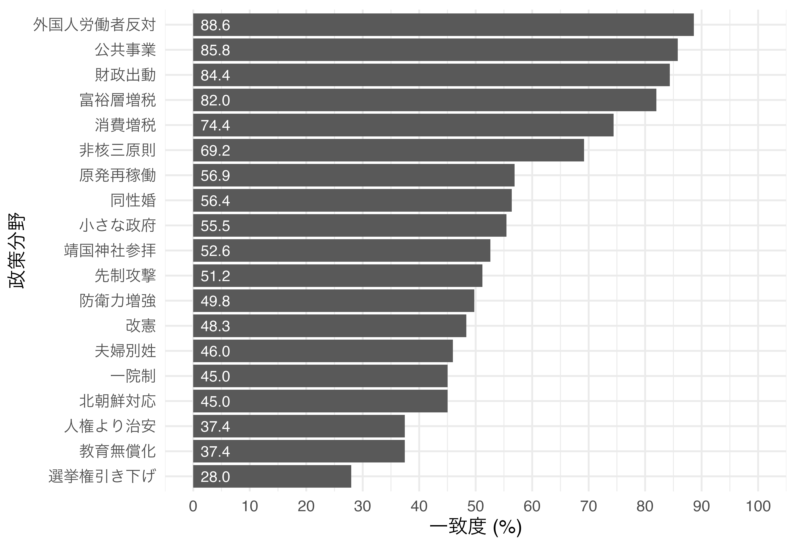
一致度のばらつき
- 政策分野によって一致度が異なる
- 小さい政府、公共事業の場合、80％以上
- 財政出動、防衛量強化の場合、70％以上
- 増税、改憲は60％前後
- 選挙権年齢引き下げは30%弱
- この違いはどこから起因するのか
政策分野による違い
ばらつきの原因
- 票になる争点と票にならない争点
- 票になる争点：有権者の投票選択に影響を与える争点
- 有権者が重要でないと思う争点の場合、投票選択の基準✕
- 投票選択の基準でないため、政治家は世論を気にせず、自分の政策位置を決めることが可能
- 争点投票の3条件（Campbell et al. 1960）
- 有権者が争点について意見を持つ
- 有権者がその争点を重要だと認識する
- 有権者が選択肢（政党・候補者）の政策立場を理解する
有権者の重視争点
- 東京大学・朝日新聞共同調査（2017年衆院選）
- 最も重視した政策分野（最大3つ）
- 経済分野はカテゴリが細かいことに注意
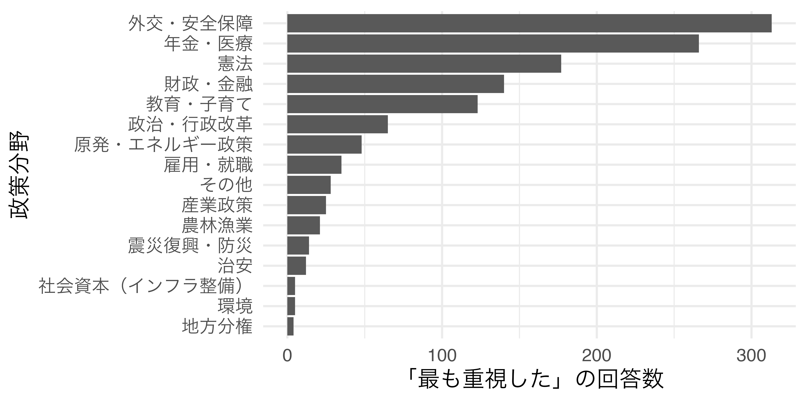
争点重視と中位投票者定理
- 福祉、経済争点を重視する有権者が多い
- 年金、医療、財政、金融、雇用など
- 中位投票者と当選者の一致率も高い傾向
- 有権者に重要視される争点は「票になる争点」
- 中位投票者の位置へ移動する誘引あり
- 例外）教育など
合意争点と対立争点
- 価値争点（valence issue）：目指す方向が同じ
- 合意争点とも呼ばれる
- 目標を達成する手段や、どの程度まで達成するかについては差あり
- 環境保護、2012年の増税争点など
- 社会的期待迎合バイアスの可能性あり
- 意見が割れにくく、争点になりにくい
- 対立争点（position issue）：目指す方向が逆
- 改憲、公共事業など
- 意見が割れやすく、争点になりやすい
- 合意争点と対立争点による一致度（応答性）の違いは？
アメリカにおける争点
- Kahn and Kenney (1999)
- アメリカ上院選挙における政策広告の77%が価値争点に関連するもの
- 価値争点の例
- 選挙資金制度改革、高齢者介護、犯罪、保育所、経済、教育、インフレ、雇用など
- 対立争点の例
- 同性愛、中絶、公民権、議会給与、死刑、薬物、対外援助、銃規制、医療保険、核、学校の祈り、税金、任期制限など
世論と政党
中位投票者と政党の政策位置
- 政策分野によるバラツキはあるものの、政治家と政策位置は中位投票者の政策位置に近い
- 政党の場合は？
- 政党の集合として議会
- 議会の政策位置と中位投票者の政策位置
データによる検証
Kim and Fording（1998）のデータを用いた検証
- 1920年 \(\sim\) 2013年の選挙時データ（26カ国）
- 中位投票者、議会、議員、政府の政策位置を測定（0 \(\sim\) 100）
- 議会が有権者に反応するのであれば…
- 中位投票者と議会の政策位置は正の関係
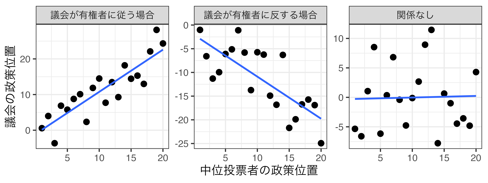
議会は有権者に反応するか
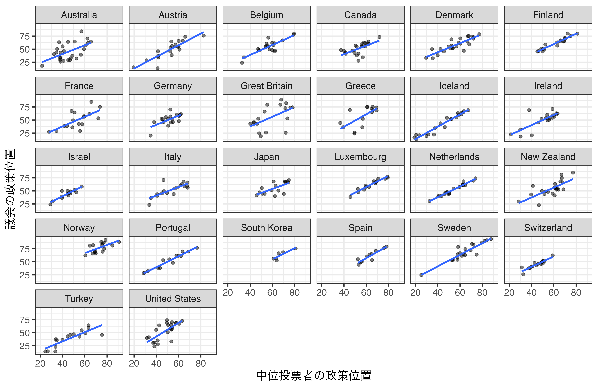
有権者の変化は議会の変化をもたらすか
- 有権者の変化は議会の変化をもたらすか
- 有権者の変化
- 今回選挙における中位投票者の政策位置 \(-\) 前期選挙における中位投票者の政策位置
- 議会の変化
- 今回選挙における議会の政策位置 \(-\) 前期選挙における議会の政策位置
有権者の変化は議会の変化をもたらすか
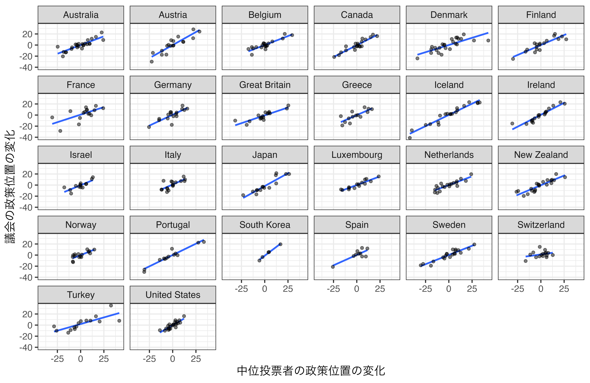
日本の場合
- 日本の場合、他国同様に議会は中位投票者に応答的
- 議会でなく、議員は？
- 議員の政策位置の中央値（中位議員?）と中位投票者の位置
- 選挙時の位置だけでなく、変化も観察
日本の場合
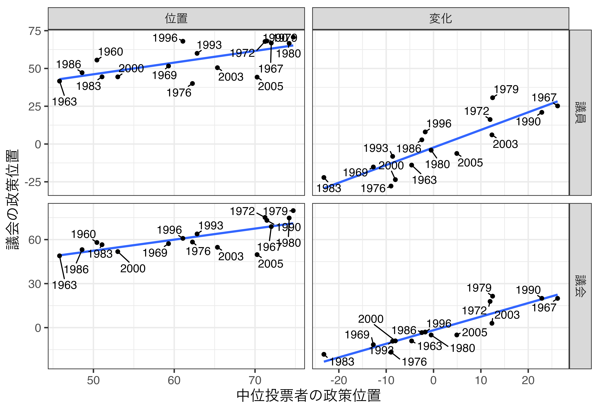
世論と政策
- 政党（の集合として議会）は中位投票者に応答的
- 中位投票者と議会の政策位置は正に比例
- 中位投票者の政策位置の変化は議会政策位置の変化をもたらす
- 議会のみならず、議員も
世論と政策
有権者が望む政策は実現されるか
- 政党・議員の政策位置が中位投票者に応答的
- しかし、有権者が望む政策が常に実現されるとは限らない。
- Kim and Fording (1998)の場合、候補者、政党が掲げている公約（マニフェスト）で政策位置を測定しているものの、常に公約が実現されるわけではない。
- 有権者が望む政策と実現される政策の関係は?
有権者の望み
- 「国民生活に関する世論調査」
- 1954年から内閣府が実施
- 「あなたは、今後、政府はどのようなことに力を入れるべきだと思いますか。この中からいくつでもあげてください。」
- 調査年によって選択肢、測定方法が異なる。
- 例）1977年調査は一つのみ選択（SA）、2023年調査は無制限（MA）
有権者が望む政策（1977）
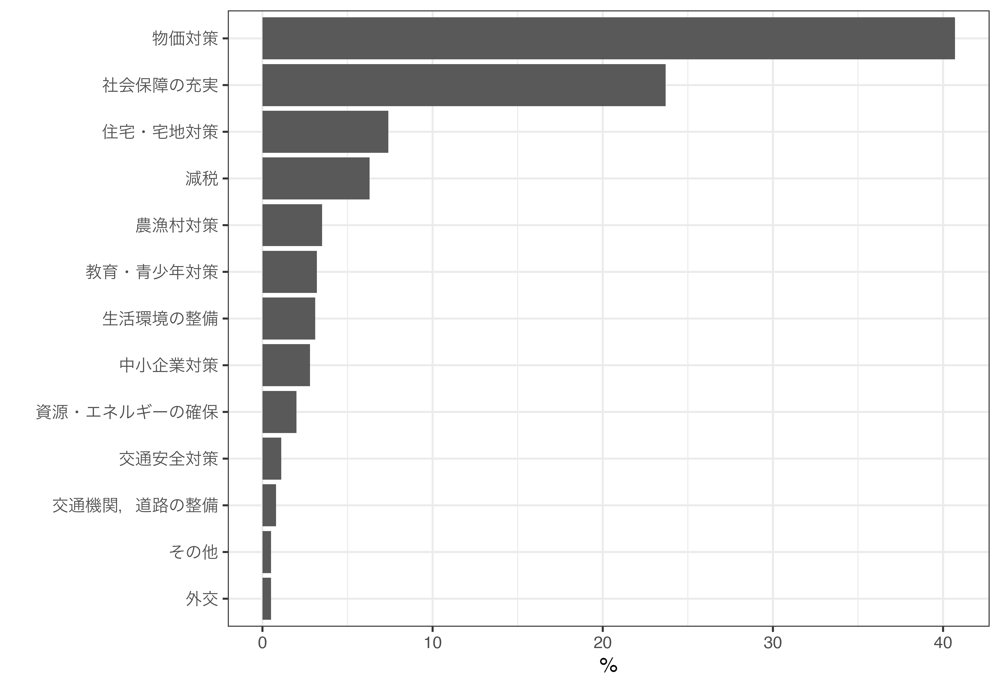
有権者が望む政策（1990）
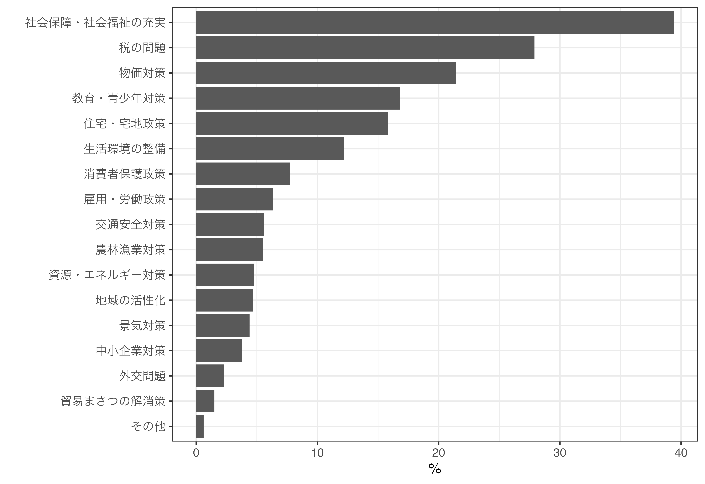
有権者が望む政策（2000）
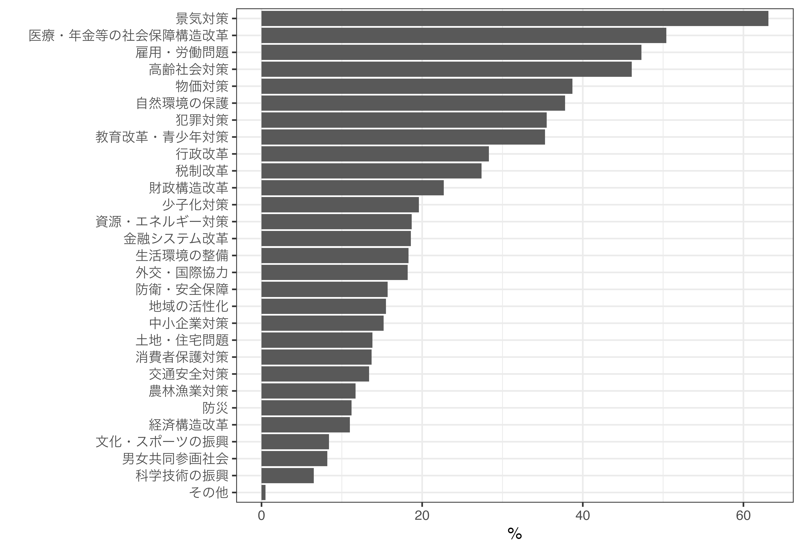
有権者が望む政策（2010）
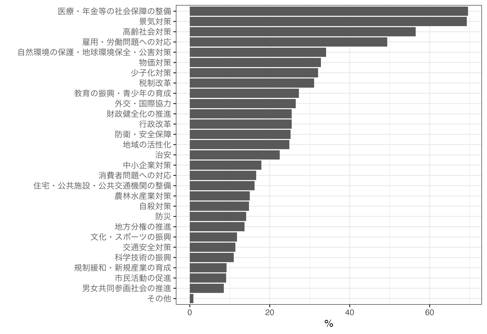
有権者が望む政策（2023）
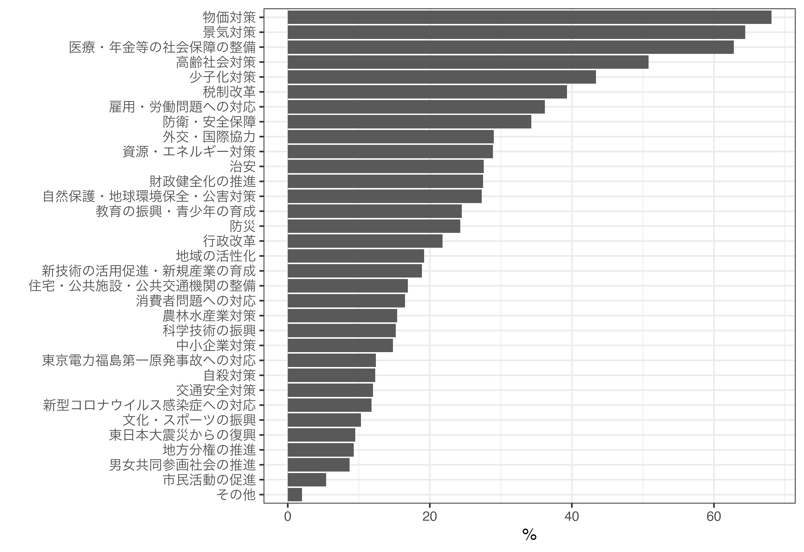
有権者の望みは政策に反映されるか
- 景気対策への要望
- 国内総生産（GDP）における公共事業支出費の比率
- 国土交通省HPから入手
- 社会保障への要望
- 国内総生産（GDP）における社会保障支出費の比率
- 国立社会保障・人口問題研究所HPから入手
- それぞれ前年度からの変化を計算し、「要望の変化」と「支出費の変化」の関係を確認
有権者の望みは政策に反映されるか
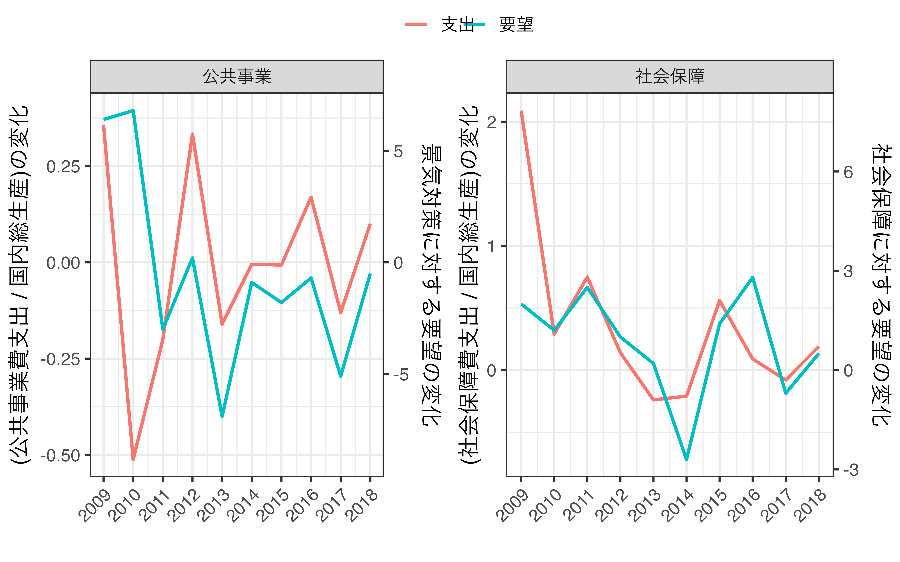
有権者の望みは政策に反映されるか
- 2009年以降、有権者の要望と政府の支出には正の関係
- 比較的、有権者にとって優先順位の低い対外政策
- 対外政策への要望と国防費支出の関係
- 1976年（三木内閣）の「国防費1%枠」
- 国防費は常にほぼ1%であり、変化なし
- ただし、アメリカでは冷戦期（1965-1900年）において世論に応じて軍事支出が変動（Hartley and Russett 1992）
世論と応答性
応答性を高めるためには
- 争点投票
- 応答性の高い候補者には再選を、低い候補者には落選を
- アメとムチを合理的に駆使する
- 情報の非対称性の克服
- 有権者の努力
- 制度整備（マスコミ、市民団体、野党）
- 政党、政治家による悪用の可能性には注意
- その他（政治参加など）
政治文化論（2024年度夏期集中）@神戸大学